Build Guide
This will walk you through the step-by-step process of populating the Iosefka PCB using components from the Bill of Materials, as well as uploading the firmware to the microcontroller.
Note: This guide was made using an older version of the PCB. The only differences are a few of the component values (follow values on your PCB and you'll be fine), the omission of the 1M resistor which is now DNP (do not place) on the new PCB, some silk screen labels on the control board, and the addition of the 6th spacer between the Switch Keys.
DISCLAIMER
We are not responsible for any accidents that arise during the build process, or in the course of operation. Any safety precautions involved with working with solder, electrical components, and anything else are the responsibility of the builder.
Tools
Required
- Soldering Iron
- Solder (leaded or lead free, you do you)
- Wire cutters
- Small phillips screwdriver
- Small flathead screwdriver
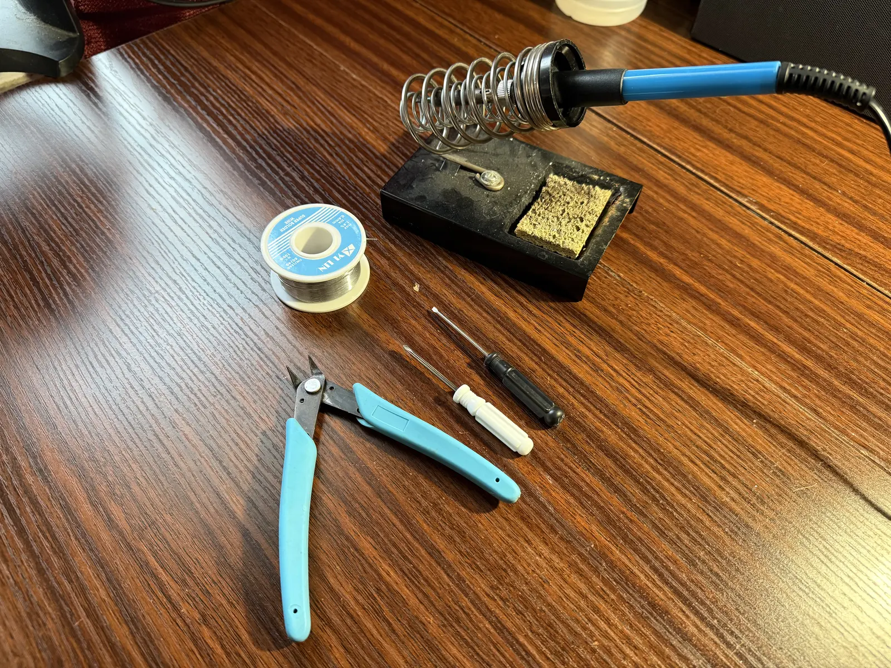
Optional (but recommended)
- "Helping hands" clips for soldering (pictured in two different sizes)
- Soldering flux paste
- Electronics tweezers
- Desoldering wick
- (not pictured) Painter's tape
- (not pictured) Rubber bands
- (not pictured) Rubbing alcohol
- (not pictured) Q-tips or microfiber rag

Step 0: Flashing the Raspberry Pi Pico
Flashing the firmware to the Raspberry Pi Pico is easy.
- Download the iosefka.uf2 firmware file from here:
- https://github.com/GlobalSequence/iosefka/releases
- Plug a micro USB cable into the Raspberry Pi Pico
- Press the BOOTSEL switch on the Pico
- With the BOOTSEL switch held down, plug the USB cable into the computer
- The Raspberry Pi Pico will appear as a drive on your computer
- Drag and drop the iosefka.uf2 file directly into the drive
Control Board
First, populate the IC sockets. Some people put the sockets on later, but I prefer to put them on first when no other components are in the way. Up to you!

Important! Make sure that the scallop in the socket lines up with the crescent shape on the PCB silkscreen.
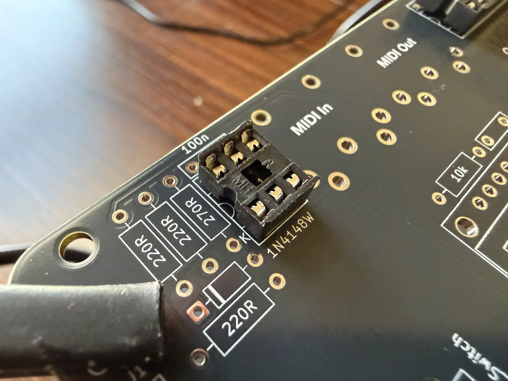
You can run a rubber band along the IC sockets to hold them in place when soldering them in upside down. Painters tape also works well.
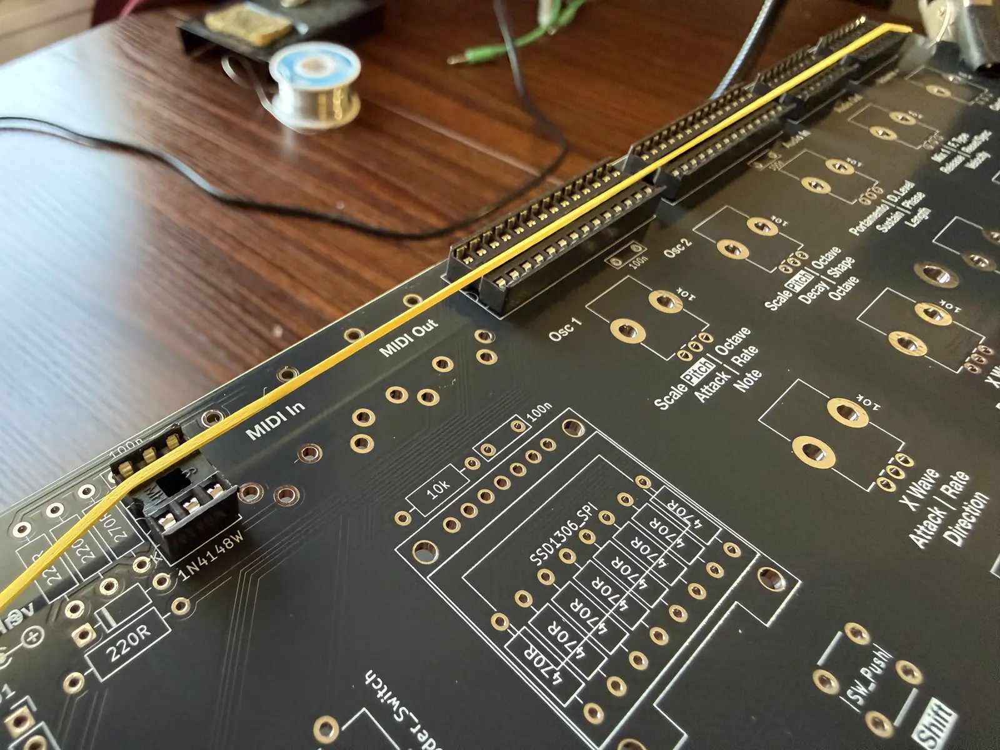

Note on LED Direction: The long leg of the LED is the anode (+) which goes into the round hole, the short leg is the cathode (-) which goes into the square hole.
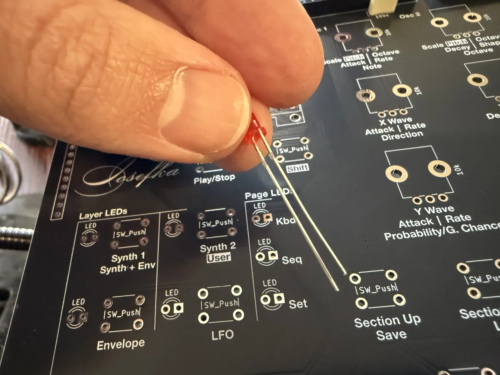
Kinda hard to tell, but the cathode side of the LED is flat, which helps to make sure that you put it in the correct way.

Place the diodes (this includes the LEDs).
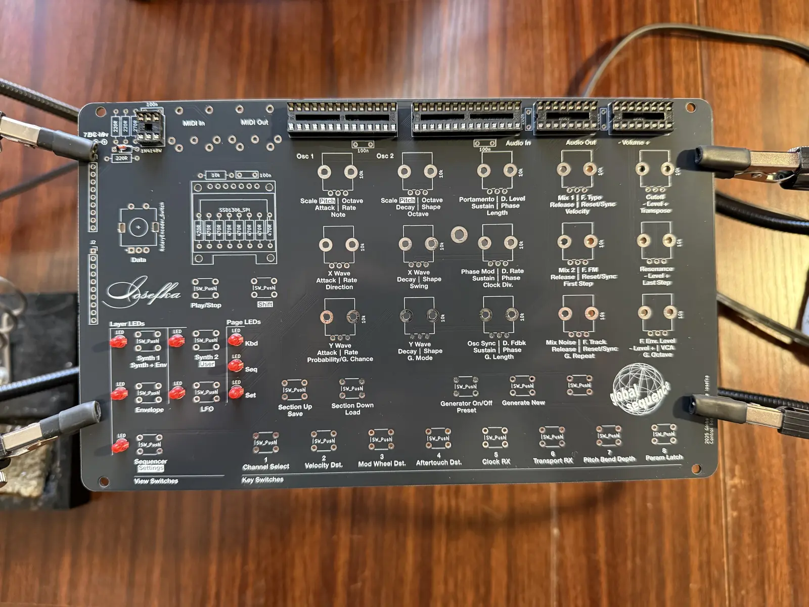
Place the resistors.
IMPORTANT! Don't place the 470 Ohm resistors that go under the OLED on the top side of the board! Those go underneath.

Place the capacitors.

Place the switches. Press them down so they're flush with the PCB before soldering. Also place the encoder.
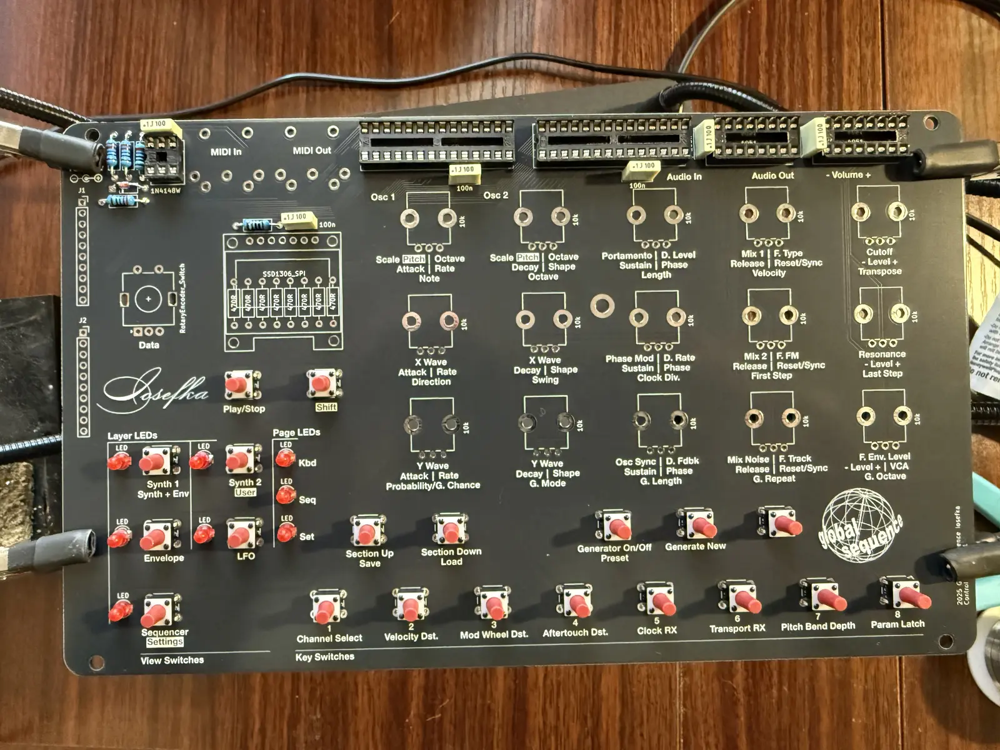
Place the potentiometers. It's kind of tricky, I like to put one of the anchors in, then guide the three pins in, and then press the second anchor in with my thumb. Also, up to you but I don't solder the anchors. God forbid we have to remove one or more of these one day.
I've also placed the encoder in at this point.
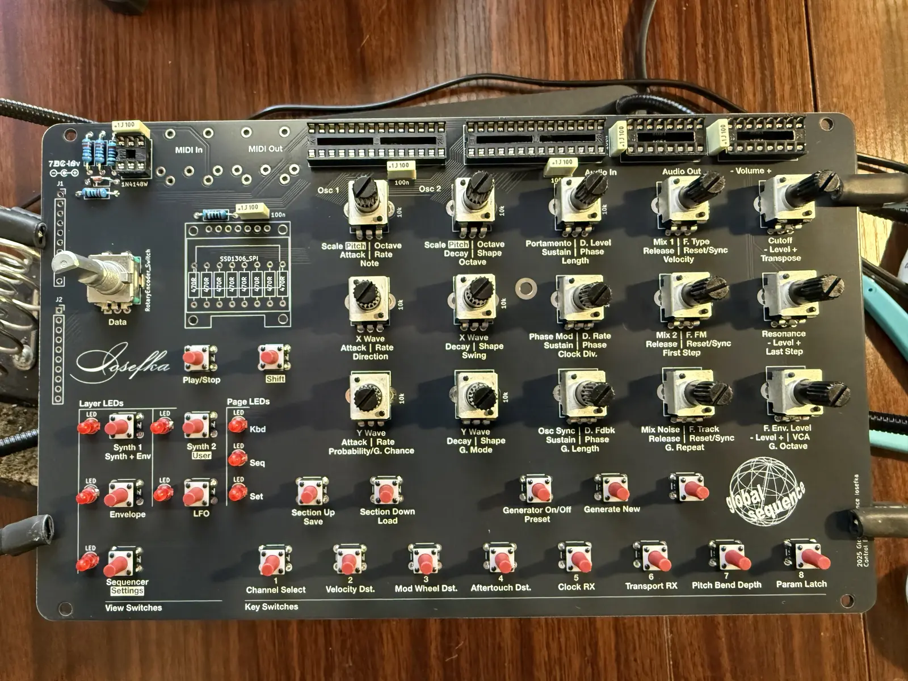
Now place the resistors on the underside of the board. When you cut the leads on these, cut them as short as possible, so they don't touch the OLED when it is in place.

Place the MIDI sockets. Hold them in place with some tape or a rubber band if necessary.
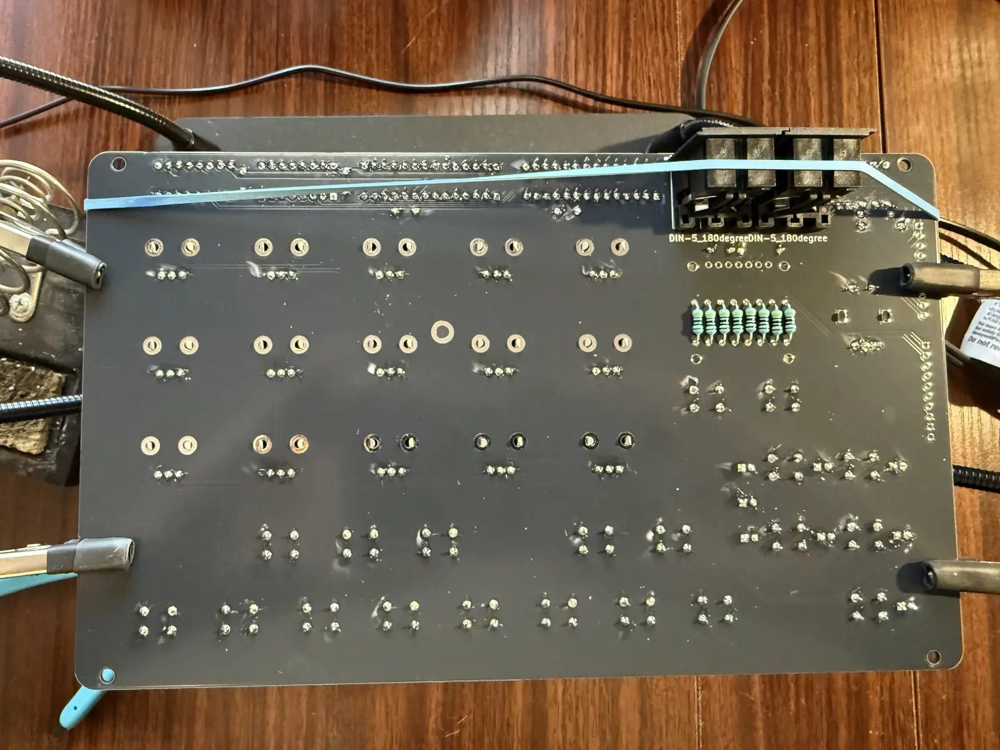
Place the pin headers and solder them on the top of the board. Here I'm holding the headers in place and in alignment with some painter's tape.

Use 2M Screws for the OLED screen, and fasten the nuts on the underside. The nuts might get caught on the pin header, if so, twist the screw itself and the nuts will spin into place. If the OLED comes with pin headers already soldered in, then solder the pin headers straight into the board.
Note 1: The nuts are shorter than the plastic piece on the pin header. If this is undesirable, you can double up on the nuts on the underside of the display.
Note 2: The holes for the screws are larger than the M2 screws, this is because these OLED displays are not at all standardized so the screw holes on your display may vary in width and vertical placement from another one.
![[IMG_2567.webp]]
Fasten the OLED in place after soldering it in.
![[IMG_2568.webp]]
Since you're soldering some components on the top side of the control board, some unsightly flux residue may occur. You can get it off with some rubbing alcohol. Thus far, I have not removed any silkscreen this way, but might be a good idea to do a small test swab to see if it's safe depending on where you get your board fab'd.
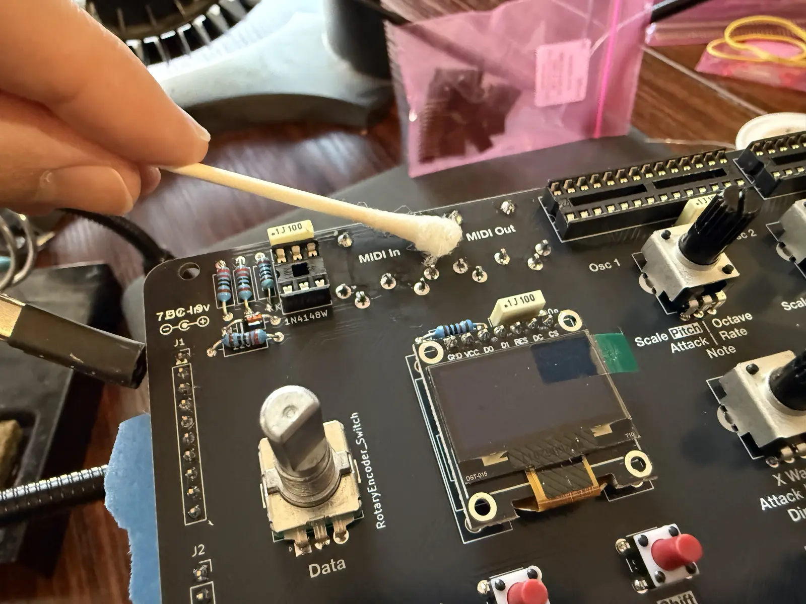
Ain't it beautiful? If you purchased a cap for the encoder, you can christen the control board with it now.

Motherboard
As above, so below. Place the DIP sockets first.

Note: Make sure that the MCP4822 and MCP3201 sockets are facing each other as in this picture. The MCP3201 socket (and consequently the MCP3201 chip lol) faces down.
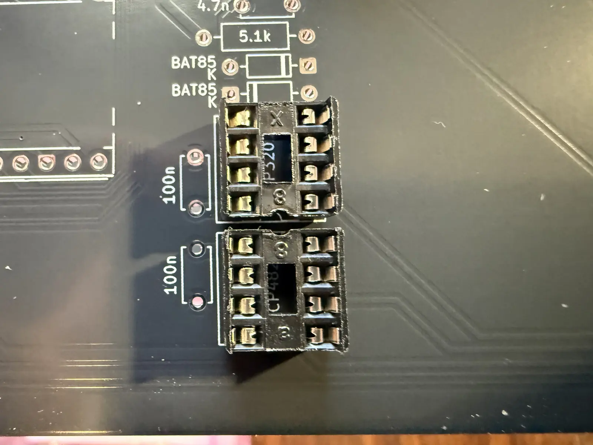
I highly recommend putting the female pin headers in next, as I use painters tape to secure the pin headers to the PCB before soldering, which gets a bit harder if there are a bunch of resistors and caps in the way.
Note: These are the short-pinned female pin headers. The long pinned ones will be used further down in the build guide.
I also place the audio jacks and the barrel jack for the power for the same reasons. It's easier to hold them in place when the board is not populated.
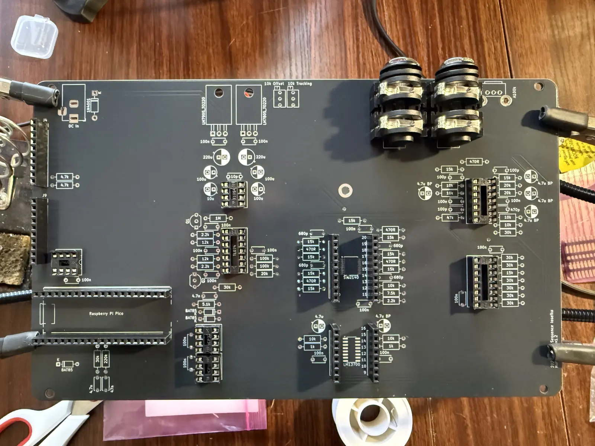
Place the resistors and diodes. I did the resistors and diodes in one go cuz there's like 3 diodes.
NOTE: Ignore the resistor marked as DNP (do not place) on the PCB. This is from an older version and not in use. This resistor is marked as DNP on the PCB, you can't miss it.

Place the ceramic caps. Ignore the fact that all my 100nf caps are the floppy circular kind. I got a billion of them in bulk.

Place the electrolytic caps. Long pin goes into the black side, short pin goes into the white side.
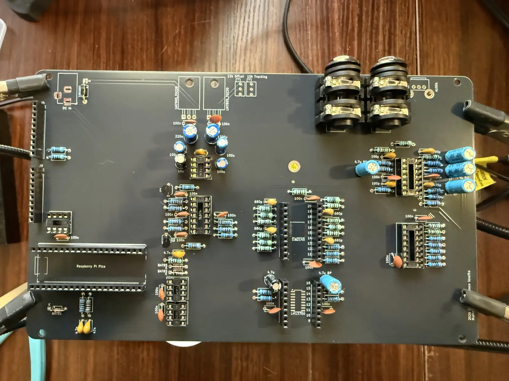
Now for the miscellaneous components along the top.

Let's do a quick power test now. Insert the LT1054 IC and the Raspberry Pi Pico board.
!IMPORTANT!: Before plugging in the power adapter, make sure that the motherboard is NOT on a metal or conductive surface. Ideally, the PCB should be suspended.
Plug the power supply into the barrel jack.
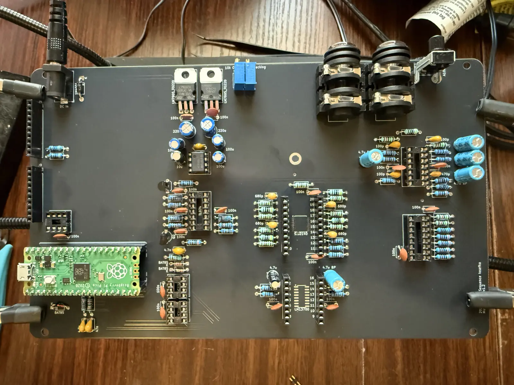
With a multimeter, find the CD4051 socket in the bottom right of the motherboard and put the black lead on the ground pin (GREEN), and use the red lead to test the +5v and -5v pins pictured below.
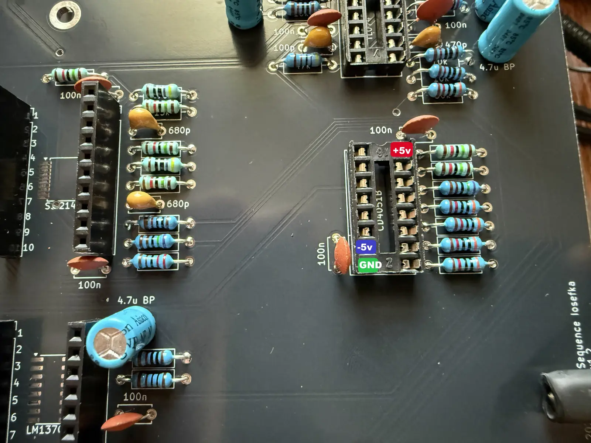
Find the 24LC256 socket (above the Raspberry Pi Pico). Again with the multimeter, put the black lead on the ground pin and the red lead on pin 8, see picture below.

If the power is supplied in the way listed in the two pictures above, proceed to place the ICs, microcontroller, and breakout boards (see section below for soldering breakout boards and microcontroller). Brings a tear to yer eye.
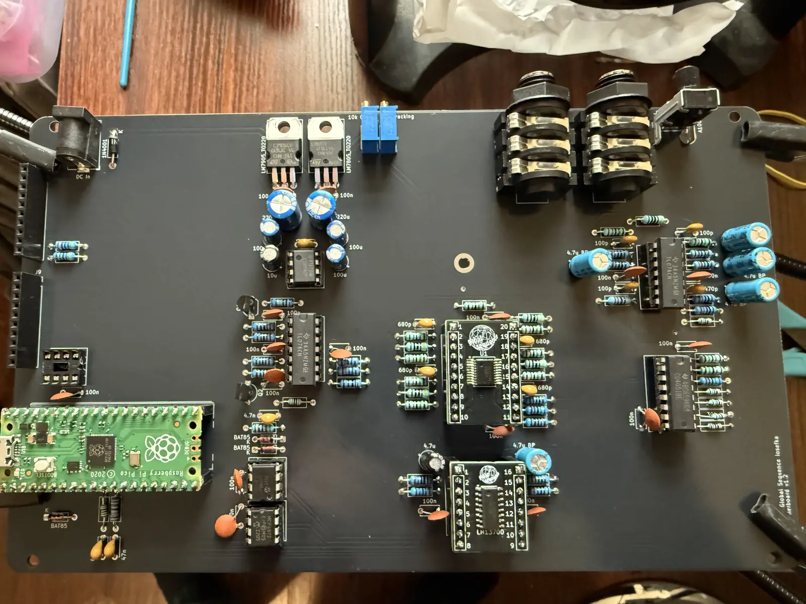
Breakout Boards
Time for some SMD soldering folks! For both the LM13700 and SSI2140, the instructions are the same.
Note: The SMD instructions here are by no means comprehensive, I recommend one of the many helpful YouTube videos on soldering SMD chips. It's not as intimidating as it sounds, but it's more than I think is appropriate to type out in the build guide.
Note: There is a spot on the Motherboard PCB where you can solder the SMD components directly, but I prefer breakout boards for easy future maintenance if necessary. Up to you.
First, apply some flux to the pins on each corner of the breakout.
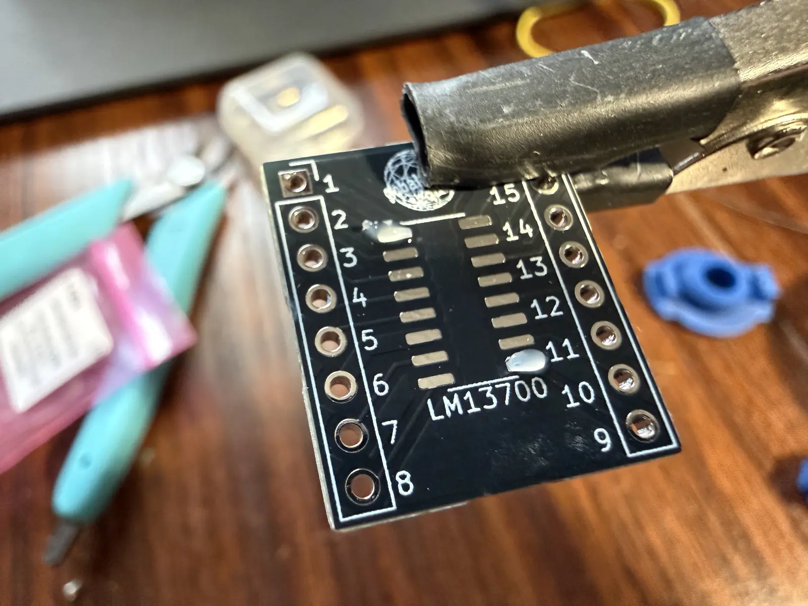
Place the IC making sure that the first pin is in the correct corner, as indicated by the small circle on the IC, and the arrow on the breakout.

Apply solder to the two pins with flux.
Apply flux to all the other pins and solder them, ensuring that there is no solder bridges.
Then make sure to remove all the extra flux with rubbing alcohol and a q-tip or microfiber rag.

For both the microcontroller and the breakout boards, it is helpful to secure the pin headers by resting them on a breadboard, and then putting the components on top as pictured below. I don't recommend pressing the pins into the breadboard, as it may affect the pins' vertical alignment.

Solder the corner of one side first, ensuring that the pins are as vertical as possible. You can use this single solder point to align both pin headers. For example, if you solder the one corner and the pin headers are slanted, you can reheat the single solder joint while aligning the board with your finger on top, then let the solder cool. The pins should now stay aligned while you solder the rest in.

Solder the rest!
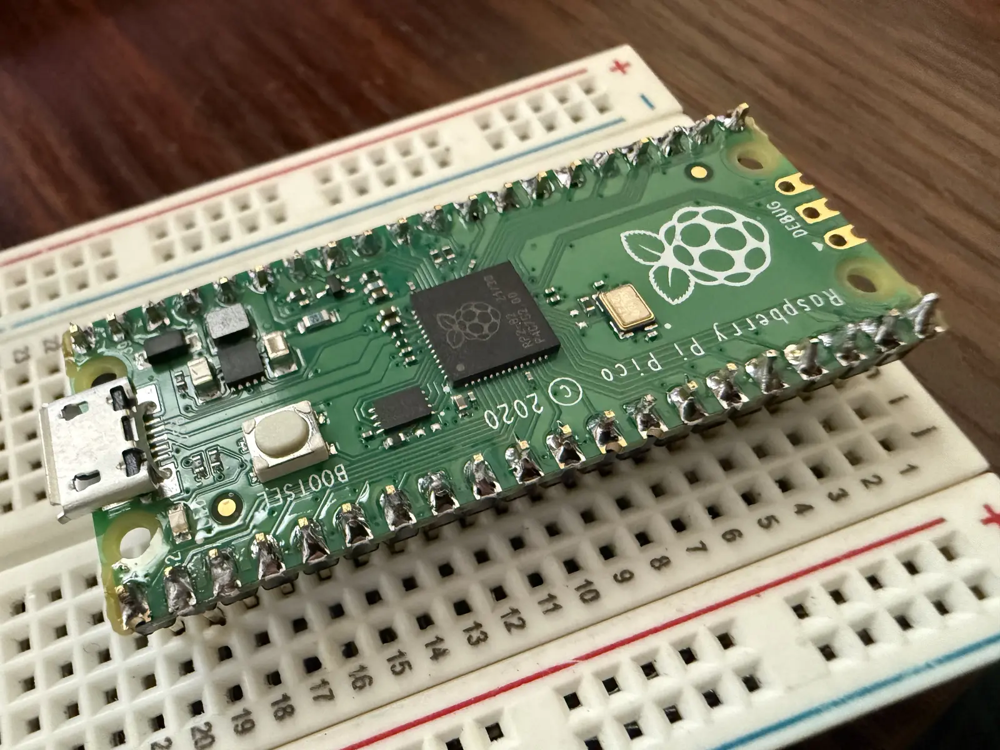
Assembling the Boards
On the Control Board, put the hex screws through the top side and screw the spacers into the bottom side by hand. Hand-tight is fine, don't go damaging your board now.

All screws/spacers in.

In the Bottom Board (with the Iosefka logo), screw in the screws and the plastic nuts, leaving some slack in the screw, so that the screw can turn when connecting boards.
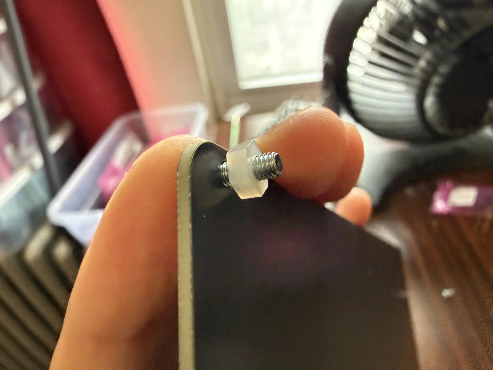
Iosefka uses two female pin headers as spacers to connect the pins that lead from the Motherboard to the Control Board. The standard female pin headers don't have pins long enough, and the long-pinned pin headers are too long, so we have to compromise by cutting the pins on the long-pinned ones.
In this picture, I've put the female pin headers side by side with the male pin header to show the length that the leads need to be cut to.

Really, you can eyeball it. As long as the cut pins are roughly the length of the male pin header. A few millimeters short or long should be fine. However, if you want to be thorough, you can put the male pin header atop the female one, and use a marker to trace along the bottom of the male pin header to see where you should cut. Cut slightly above the marked line.

As you can see, it's not perfect, but it works just fine!
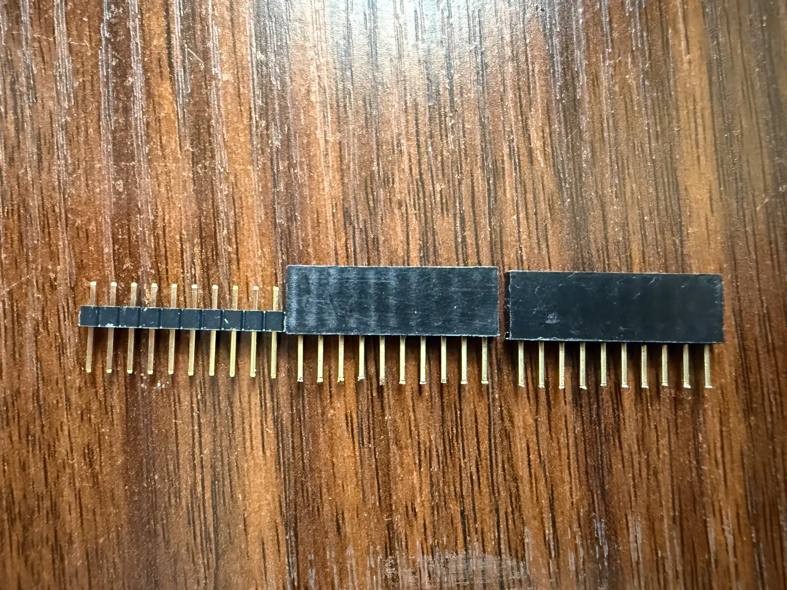
Place the pin headers in the pin sockets on the control board.

Attach the Control Board to the Motherboard by placing the male pin headers into the female pin headers.
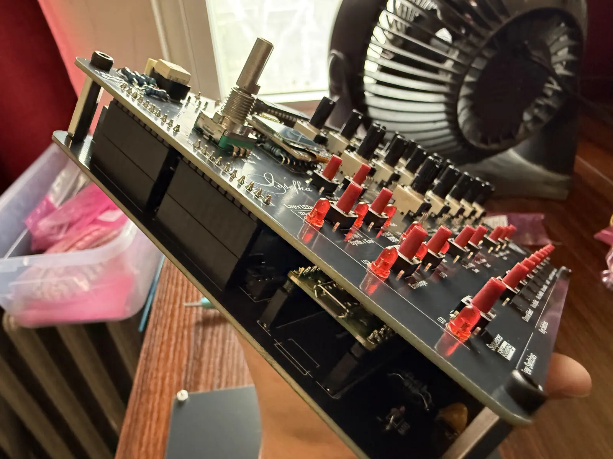
Align the Bottom Board with the Motherboard and screw the screws into the Control Board spacers.

Go nuts and place rubber feet wherever the hell you want. Just make sure there's four of 'em!

Behold your work!

At this point, you should be able to plug power into your Iosefka model and it will power up.
Before plugging Iosefka into audio, you must now format the EEPROM.
Formatting the EEPROM
You just need to hold down some buttons with the power off, then plug the device in. See the Initializing All Presets section for the exact details.
Now! If you plug the synth into a speaker and hit one of the keyboard switches and hear sound, that's a great sign!
Lastly, we just need some...
Calibration
The two trimpots on the back of the synth are for: - Filter Cutoff Offset - ensuring that the filter is in the correct frequency range - Filter Tracking - Making sure that the filter plays musically across a certain octave range

Cutoff Calibration
The filter on Iosefka ranges between roughly 20Hz to 20kHz. You can use an oscilloscope to calibrate the cutoff, but we can also just calibrate this by ear using the self-resonance. With the synth on:
- Navigate to the Synth 1 View
- Turn down Mix 1, Mix 2, and Mix Noise parameters to 00
- Turn Cutoff to 00
- Turn Resonance to FF
- Navigate to Synth 1 View
- Hold shift and turn the VCA Parameter to FF
- Navigate to the Synth 2 View
- Ensure the F. Type parameter is L4
- Turn the F. Track parameter to 00
You should now hear a sine wave from the filter self-oscillating. Looking directly at the back of the synth (like in the pic above), turn the Offset trimpot to the left until the sound is too low to hear. Now if you turn the Cutoff parameter to FF, and you still hear a super high pitch, turn the Offset trimpot to the right until the sound is too high pitch to hear, then turn it just a smidge more if you're 30 or older.
Tracking Calibration
We will now use the built-in sequencer on Iosefka to test the tracking across 5 octaves. We will enter 6 octaves in the sequencer just to see if we get lucky.
A musical tuner will help us with this one With the synth on:
- Navigate to the Synth 1 View
- Turn down Mix 1, Mix 2, and Mix Noise parameters to 00
- Turn Cutoff to 40
- Turn Resonance to FF
- Navigate to Synth 1 View
- Hold shift and turn the VCA Parameter to FF
- Navigate to the Synth 2 View
- Ensure the F. Type parameter is L4
- Turn the F. Track parameter to FF (Make sure it's on FF not 00!)
At this point, you should hear the sequencer self-oscillating in perpetuity. Make sure it's loud enough so that your neighbors can hear its glory!
- Navigate to the Sequencer view
- Make sure that the Sequencer pattern is empty. If it is not, load a blank preset, which should have an empty pattern and start from the top.
- Turn the First Step parameter to 00
- Turn the Last Step parameter to 05
- Turn the Clock Div parameter to *8
- Turn the Octave parameter so that the note in the top left of the OLED Display reads "C1"
- Hit Key Switch 1 to place a step with the value C1 on step 1
- Repeat the last two steps turning the Octave parameter so that it reads "C2", then hitting Key switch 2, and so on until the you place C6 by hitting Key switch 6. You should now have a sequence of 6 steps ascending one octave per step.
- Press the Play switch. You should now hear the sequencer playing a sequence ascending by roughly 1 octave.
- Turn the Tracking trimpot in either direction until the sequence comes into tune. Each note should represent one musical octave.
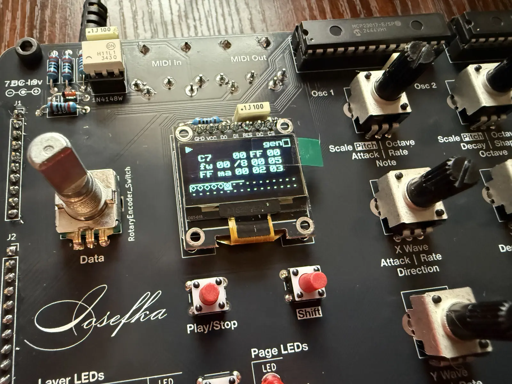